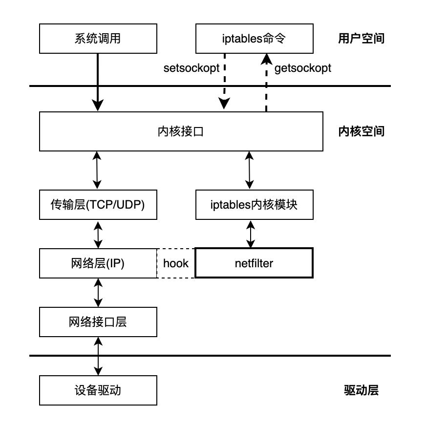

Netfilter与iptables
我们配置LVS以及在第四章讲解云原生时，安装Docker或者Kubernetes，首先会执行两条命令:
systemctl stop firewalld // 相当于iptables的升级
echo 1 > /proc/sys/net/ipv4/ip_forward
这两条一个是关闭网络数据包控制，一个是开启本机开启数据包转发功能。
再从应用上讲：实现四层负载均衡的LVS有个核心模块IPVS，以及Kubernetes中kube-proxy iptables模式，实际上都是在Netfilter上层构建的应用，从而实现数据包的转发和控制。
从这两方面，要了解负载均衡或者云原生网络，得先清楚一个数据包在Linux内核途经，以及Netfilter和iptables的机制。
Netfilter的定义是一个工作在Linux内核的网络数据包处理框架，为了理解netfilter的工作方式，我们首先需要对数据包在Linux内核中的处理路径建立基本认识。
数据包的内核路径
数据包在内核中的处理路径，也就是处理网络数据包的内核代码调用链，大体上也可按 TCP/IP 模型分为多个层级，以接收一个 IPv4 的 TCP 数据包为例，大致有三个步骤：
一: 在物理网络设备层，网卡通过 DMA 将接收到的数据包写入内存中的环形缓冲区(Circular buffer), 经过一些列的中断调度后，Linux kernel 调用 skb_dequeue 将数据包加入对应设备的处理队列中，并转换成 sk_buffer 类型（Socket buffer），最后调用 netif_receive_skb 函数按协议类型对数据包进行分类，并跳转到对应的处理函数。
如下图所示：

二: 假设数据包为 IP 协议包，对应的接收包处理函数 ip_rcv 将被调用，数据包处理进入网络IP层。经过对IP包检查、聚合等后进行路由查询并决定是将数据包交付本机还是转发其他主机，
假设数据包的目的地址是本主机，接着执行的 dst_input 函数将调用 ip_local_deliver 函数。ip_local_deliver 函数中将根据 IP 首部中的协议号判断载荷数据的协议类型，最后调用对应类型的包处理函数。本例中将调用 TCP 协议对应的 tcp_v4_rcv 函数，之后数据包处理进入传输层。
三：tcp_v4_rcv 函数同样读取数据包的 TCP 首部并计算校验和，然后在数据包对应的 TCP control buffer 中维护一些必要状态包括 TCP 序列号以及 SACK 号等。该函数下一步将调用 tcp_v4_lookup 查询数据包对应的 socket，如果没找到或 socket 的连接状态处于 TCP_TIME_WAIT，数据包将被丢弃。如果 socket 处于未加锁状态，数据包将通过调用 tcp_prequeue 函数进入 prequeue 队列，之后数据包将可被用户态的用户程序所处理。
Netfilter hooks
Netfilter 的首要组成部分是 netfilter hooks。hooks是数据包经过经过协议栈时netfilter注册的处理函数。
hook 触发点
对于不同的协议IPv4、IPv6 或 ARP 等，Linux 内核网络栈会在该协议栈数据包处理路径上的预设位置触发对应的 hook。在不同协议处理流程中的触发点位置以及对应的 hook，本文仅关注 IPv4 协议：
在IPv4的数据包流程中，有五个重要的hook
- NF_IP_PRE_ROUTING: 这个hook在IPv4协议栈的 ip_rcv 函数中执行， 是所有接收数据包到达的第一个hook触发点，从名字可以看出它在进行路由判断之前进行。
- NF_IP_LOCAL_IN: 这个hook在IPv4协议栈的 ip_local_deliver 函数中执行，经过路由判断后，目标地址是本机的接收数据包到达此hook触发点
- NF_IP_FORWARD: 这个hook在IPv4协议栈的 ip_forward 函数中执行，经过路由判断后，目标地址不是本机地址的数据包到达此hook触发点
- NF_IP_LOCAL_OUT: 这个hook在IPv4协议栈的 ip_local_out 函数中执行，所有本地生成的发往其他机器的包, 在进入网络栈后首先到达此hook触发点
- NF_IP_POST_ROUTING: 这个hook在IPv4协议栈的 ip_out 函数中执行，本机产生准备发出的包或者转发的包，在经过路由判断后到达此hook触发点
在内核协议栈的实现上，所有的触发点位置统一调用 NF_HOOK宏来触发hook
static inline int NF_HOOK(uint8_t pf, unsigned int hook, struct sk_buff *skb, struct net_device *in, struct net_device *out, int (*okfn)(struct sk_buff *)) { return NF_HOOK_THRESH(pf, hook, skb, in, out, okfn, INT_MIN); }
实际调用方式以 net/ipv4/ip_forward.c 对数据包进行转发的源码为例
在 ip_forward 函数中以 NF_INET_FORWARD hook 作为入参调用了 NF_HOOK 宏，并将网络栈接下来的处理函数 ip_forward_finish 作为 okfn 参数传入：
int ip_forward(struct sk_buff *skb) {
.....
/*路由重定向报文*/
if (rt->rt_flags&RTCF_DOREDIRECT && !opt->srr)
ip_rt_send_redirect(skb);
skb->priority = rt_tos2priority(iph->tos);
return NF_HOOK(PF_INET, NF_IP_FORWARD, skb, skb->dev, rt->u.dst.dev,
ip_forward_finish);
}
hook回调函数
Netfilter 的另一组成部分是 hook 的回调函数。
内核网络栈既使用 hook 来代表特定触发位置，也使用 hook的整数值作为数据索引来访问触发点对应的回调函数。
内核的其他模块可以通过 netfilter 提供的 API 向指定的 hook 注册回调函数，同一 hook 可以注册多个回调函数，通过注册时指定的 priority 参数可指定回调函数在执行时的优先级。
Netfilter的 hook 的回调函数是一个nf_hook_ops的结构体。
同一 Netfilter hook下所有的 nf_hook_ops 注册后以Priority为顺序组成一个链表结构，注册过程会根据Priority从链表中找到合适的位置，然后执行链表插入操作。
在执行触发指定的 hook 时，将迭代该hook对应的nf_hook_ops 链表，并依次调用每一个 nf_hook_ops的注册函数成员 hookfn。示意图如下：

这种链式调用回调函数的工作方式，也让 Netfilter hook 被称为 Chain，这也与iptables中常讲的四表五链相呼应。
理解iptables
在上文我们了解了 Netfilter的机制，它提供的 hook 来实现对数据包处理，并实现API提供对上层的调用。
iptables则是Netfilter的操作接口，iptables在用户空间管理应用于数据包的自定义规则，Netfilter执行规则所对应的策略对数据包进行处理。
图：iptables与netfilter的关系
iptables 分为两部分：
- 用户空间的 iptables 命令向用户提供访问内核 iptables 模块的管理界面。
- 内核空间的 iptables 模块在内存中维护规则表，实现表的创建及注册。
iptables内核空间
在内核网络栈中，iptables 通过维护xt_table对众多的数据包处理规则进行有序管理，一个xt_table对应一个规则表，对应的用户空间概念为 table。不同的规则表有以下特征：对不同的 netfilter hooks 生效， 在同一 hook 中检查不同规则表的优先级不同。
基于规则的最终目的：iptables 默认初始化了 4 个不同的规则表，分别是 raw、 filter、nat、mangle。
- raw表: 负责去除数据包上的连接追踪机制（iptables默认开启对数据包的连接追踪）
- mangle表： 负责数据包的拆解、修改、再封装
- nat表 负责数据包的网络地址转换
- filter表 负责数据包过滤功能，防火墙的真正实现
以 filter 为例介绍 xt_table的初始化和调用过程：
#define FILTER_VALID_HOOKS ((1 << NF_INET_LOCAL_IN) | \
(1 << NF_INET_FORWARD) | \
(1 << NF_INET_LOCAL_OUT))
static const struct xt_table packet_filter = {
.name = "filter",
.valid_hooks = FILTER_VALID_HOOKS,
.me = THIS_MODULE,
.af = NFPROTO_IPV4,
.priority = NF_IP_PRI_FILTER,
};
在 net/ipv4/netfilter/iptable_filter.c 模块的初始化函数 iptable_filter_init 中，调用xt_hook_link 对 xt_table 结构 packet_filter 进行如下初始化：
- 通过 .valid_hooks 属性迭代 xt_table 将生效的每一个 hook，对于 filter 来说是 NF_INET_LOCAL_IN，NF_INET_FORWARD 和 NF_INET_LOCAL_OUT 这 3 个 hook。
- 对每一个 hook，使用 xt_table 的 priority 属性向 hook 注册一个回调函数。
不同 table 的 priority 其定义在 include/linux/netfilter_ipv4.h 文件，在 netfilter 框架下，各个 hook 点上的 hook 函数是以一定的优先级挂在一个链表上的，优先级排序是由高到底
enum nf_ip_hook_priorities {
NF_IP_PRI_RAW = -300,
NF_IP_PRI_MANGLE = -150,
NF_IP_PRI_NAT_DST = -100,
NF_IP_PRI_FILTER = 0,
NF_IP_PRI_SECURITY = 50,
NF_IP_PRI_NAT_SRC = 100,
};
当数据包到达某一 hook 触发点时，会依次执行不同 table 在该 hook 上注册的所有回调函数，这些回调函数总是根据上文的 priority 值以固定的相对顺序执行：

filter 注册的 hook 回调函数 iptable_filter_hook,对 xt_table 结构执行公共的规则检查函数 ipt_do_table。ipt_do_table 接收 skb、hook 和 xt_table作为参数，对 skb 执行后两个参数所确定的规则集，返回 netfilter 向量作为回调函数的返回值。
extern unsigned int ipt_do_table(void *priv, struct sk_buff *skb, const struct nf_hook_state *state);
在了解规则执行过程前，需要先了解规则集如何在内存中表示。每一条规则由 3 部分组成：
- 一个 ipt_entry 结构体。通过 .next_offset 指向下一个 ipt_entry 的内存偏移地址。
- 0 个或多个 ipt_entry_match 结构体，每个结构体可以动态的添加额外数据。
- 1 个 ipt_entry_target 结构体， 结构体可以动态的添加额外数据。
struct ipt_entry {
struct ipt_ip ip;
unsigned int nfcache;
/* ipt_entry + matches 在内存中的大小*/
u_int16_t target_offset;
/* ipt_entry + matches + target 在内存中的大小 */
u_int16_t next_offset;
/* 跳转后指向前一规则 */
unsigned int comefrom;
/* 数据包计数器 */
struct xt_counters counters;
/* 长度为0数组的特殊用法，作为 match 的内存地址 */
unsigned char elems[0];
};
ipt_do_table 首先根据 hook 类型以及 xt_table.private.entries 属性跳转到对应的规则集内存区域，执行如下过程：

- 首先检查数据包的 IP 首部与第一条规则 ipt_entry 的 .ipt_ip 属性是否一致，如不匹配根据 next_offset 属性跳转到下一条规则。
- 若 IP 首部匹配 ，则开始依次检查该规则所定义的所有 ipt_entry_match 对象，与对象关联的匹配函数将被调用，根据调用返回值有返回到回调函数（以及是否丢弃数据包）、跳转到下一规则或继续检查等结果。
- 所有检查通过后读取 ipt_entry_target，根据其属性返回 netfilter 向量到回调函数、继续下一规则或跳转到指定内存地址的其他规则，非标准 ipt_entry_target 还会调用被绑定的函数，但只能返回向量值不能跳转其他规则。
iptables 更新延迟的问题
由于每条规则长度不等、内部结构复杂，且同一规则集位于连续的内存空间，iptables 使用全量替换的方式来更新规则，这使得我们能够从用户空间以原子操作来添加/删除规则，但非增量式的规则更新会在规则数量级较大时带来严重的性能问题。
假如在一个大规模 Kubernetes 集群中使用 iptables 方式实现 Service，当 service 数量较多时，哪怕更新一个 service 也会整体修改 iptables 规则表。全量提交的过程会 kernel lock 进行保护，因此会有很大的更新时延。
iptables用户空间
用户空间的 iptables 命令行可以读取指定表的数据并渲染到终端，添加新的规则（实际上是替换整个 table 的规则表）等。
iptables 主要操作以下几种对象：
- table：对应内核空间的 xt_table 结构，iptable 的所有操作都对指定的 table 执行，默认为 filter。
- chain：对应指定 table 通过特定 netfilter hook 调用的规则集，此外还可以自定义规则集，然后从 hook 规则集中跳转过去。
- rule：对应上文中 ipt_entry、ipt_entry_match 和 ipt_entry_target，定义了对数据包的匹配规则以及匹配后执行的行为。
- match：具有很强扩展性的自定义匹配规则。
- target：具有很强扩展性的自定义匹配后行为。
基于上文介绍的代码调用过程流程，chain 和 rule 按如下示意图执行：